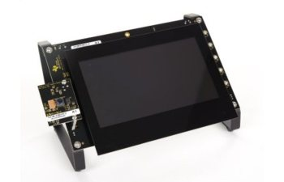

Videoconferencing systems have been around for several years. However, High
Definition and Full High Definition video conferencing systems have become an
emerging area for research and development. Another research area is keeping
the overall latency of the system low to improve the user experience. In col-
laboration with the company Televic, who are specialized in the research and
development of multimedia systems, we want to develop a video conferencing
system on a specific embedded device. The purpose of this master thesis is to
explore the Texas Instruments AM 5728 EVM board and find out if it is possible
to develop a HD proof of concept videoconferencing system with an overall
latency below 25 ms.

Student: Dennis Joosens
Promotors: Walter Daems & Theo Debrouwere